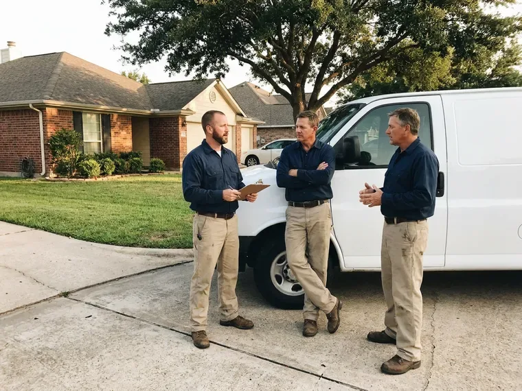

Sewer Line Cleaning in Alpharetta, GA
HGR Plumbing keeps sewer lines open in Alpharetta, GA homes with a firm price before any cable goes in.
- Experienced Sewer Techs
- Lateral Cleaning to Street
- Root Saws and Jetters
- Written Guarantee

Schedule Sewer Line Cleaning Before Small Problems Grow in Alpharetta, GA.
Call HGR Plumbing and a tech will clear the line and show you the video.
Sewer Lateral Cleaning for Alpharetta, GA Homes
HGR Plumbing cleans the sewer lateral, the private pipe between your house and the public sewer or septic tank. Homeowners typically own it. A regular cleaning keeps the lateral open and costs far less than dealing with a backup.
Work we handle every week:
- Two-way cleanout installation
- Maintenance scheduling for root-prone and grease-heavy lines
- Full lateral cleaning from building drain to street tap

Additional Drain Services Services in Alpharetta, GA
From stubborn kitchen clogs to main sewer backups, our drain services in Alpharetta, GA restore full flow fast and keep it that way.


Customers
Why Choose HGR Plumbing for Sewer Line Cleaning in Alpharetta, GA?
Your sewer line is out of sight until it fails. Then it is an emergency. Regular cleaning keeps roots, grease and scale from building into a complete blockage, which is far cheaper than cleanup after sewage comes up through a floor drain.
- Local Knowledge, We know the soil and tree types around Alpharetta, GA that work their way into sewer lines.
- Complete Lateral, We clean the whole line to the city connection, not just the nearest section.
- Clear Records, Every job includes notes on pipe type, depth and condition for your files.
Citywide Coverage
Central Alpharetta or the outskirts, the service is the same. Same tools, same rates. We provide prompt, efficient sewer line cleaning to every resident in our service area, with the same equipment and the same camera check no matter the address.
Experienced Team
Our plumbers have cleaned sewer lines of every kind. Routine and severe alike. From simple maintenance to heavy root jobs, our techs stay current on tools and techniques.
Safety-First Approach
We protect your home while we work. We use clean methods only. We use mechanical cleaning and water, never caustic chemicals, and our crew follows strict safety steps.
Trusted Certified Alpharetta Plumbing Services Professionals
At HGR Plumbing, we take pride in licensed, certified plumbing services throughout Alpharetta, GA. Those papers on the wall mean something. Our plumbers hold recognized industry credentials, and they follow strict safety and quality rules on every repair, installation and maintenance call we run.
Call Us Now PHCC Plumbing Contractor Recognition
PHCC Plumbing Contractor Recognition Better Business Bureau (BBB) Accreditation
Better Business Bureau (BBB) Accreditation Angi Certified Pro
Angi Certified Pro ISO 9001 Quality Management Certification
ISO 9001 Quality Management CertificationLateral and Sewer Line Cleaning in Alpharetta, GA
Pre-Purchase Sewer Line Cleaning and Inspection in Alpharetta, GA
Most home inspections skip the sewer line. It can be costly. We clean the line first so the camera can see the pipe walls clearly, then record the full length and provide a written report that buyers can use to negotiate repairs or credits.

Residential Sewer Line Cleaning in Alpharetta
Household laterals collect grease and hair. It takes months to close a line. Over time, grease and hair coat the pipe and catch more debris, especially in older cast iron with a rough inner wall, and we clear it with a cable or a jetter sized for the pipe.
Sewer Line Odor Remediation in Alpharetta, GA
Sewer smells mean something is wrong. Gas may be escaping. Persistent odors from drains or the yard often come from trapped waste, a blockage or a damaged line letting gas escape, and our cleaning removes the source while the camera finds any break.
Jetting Heavy Buildup in Alpharetta
Some lines need more than a cable. Jetting handles those. A jetter cleans the entire pipe wall, which lasts much longer than a snake that only opens a path.
Hydro Jetting for Sewer Lines in Alpharetta, GA
Jetting cleans the pipe wall. Cables only open a path. A jetter scours the full circumference of the pipe at pressures we set for the material, from PVC to clay.
Sewer Line Camera Inspection in Alpharetta
A camera shows the line in real time. Problems become obvious. We look for low spots where water pools, offset joints, cracks, roots and corrosion, and a locator in the camera head lets us mark the exact spot and depth on the surface, with a copy of the video for you.
Routine Sewer Line Cleaning in Alpharetta
Routine cleaning clears slow buildup. It narrows the line over time. Our tech runs a cable from the cleanout with a blade sized for the line, then jets the walls if needed, and most older lines do well with cleaning every one to two years.

Preventative Sewer Line Maintenance in Alpharetta
Scheduled cleaning beats emergency calls. Roots grow back. Properties with older plumbing or nearby trees do well with periodic cleaning, often jetting, which clears buildup before it turns into a full blockage and extends the life of the line.
Local Sewer Line Service Near Me in Alpharetta, GA
A good local sewer company answers and shows up. That is the bar. HGR Plumbing handles everything from a minor clog to a full backup with the right equipment, so you are not waiting on a second crew or a second trip.
Local sewer techs know local pipe. Pipe types differ by street. Years of work around town mean we have seen most of the pipe types and layouts under local homes.
HGR Plumbing at a Glance
- Fully licensed plumbing team covering Alpharetta, GA
- Same-day appointments and 24/7 emergency response
- Upfront, flat-rate pricing before work begins
- 4.9-star rated by 357+ Georgia customers
Alpharetta Map
Alpharetta Information
- Population
- 67,056
- Area codes
- 470/770/678
- Service area
- Alpharetta and towns within a 40 mile drive
- Nearby
- Johns Creek, Roswell, Dunwoody, Sandy Springs
Many established neighborhoods in Alpharetta, GA still rely on aging clay and cast iron sewer laterals, which makes regular cleaning one of the most effective ways to avoid backups.
Talk to a Plumber
Call HGR Plumbing for reliable plumbing work done by licensed pros in Alpharetta, GA.
Our Specialized Plumbing Services in Alpharetta, GA
At HGR Plumbing, you get every kind of plumbing service from one company across Alpharetta, GA. We go from leak detection all the way to full system installations, for homes and commercial buildings, and we do it quickly at a fair price. Take a look at our core services below:


How It Goes When We Clean a Sewer Line in Alpharetta, GA
Sewer line cleaning with us is simple and transparent from start to finish.
Call to Schedule
Contact HGR Plumbing at (770) 470-3778 to describe your sewer line problem. We ask a few questions and set a time.
Inspect the Line
Our technician checks the line, often with a sewer camera. We find out what is blocking the pipe.
Clean the Lateral
We cable or jet the line based on what we found. The blockage comes out and the pipe is cleaned to the street.
Frequently Asked Questions About Sewer Line Cleaning in Alpharetta
Most sewer line cleanings in Alpharetta, GA run $200 to $600. Severity drives the cost. A simple cable job from a good cleanout sits at the low end, while heavy roots or a deep blockage that needs jetting can cost more than the top of that range, and you get the price before work starts.
We tell you right away. It will not fix a break. If the camera shows a broken, collapsed or badly damaged line, we lay out the repair and replacement options along with the costs so you can decide what to do.
Spartan Tool, RIDGID and Gorlitz. These are field-tested brands. Our sewer cameras, drain cables and jetters come from these makers because they hold up to daily use and handle tough sewer line blockages.
Quarterly or twice a year is common. Grease drives it. Homes usually need cleaning every one to two years, but restaurants and other high-use businesses see far more grease and waste and need a tighter schedule.
One to three hours, usually. Some run longer. Heavy root intrusion or more than one blockage in the line may take extra time, but our crew works efficiently to keep the disruption to your day short.
A simple clog takes 1 to 2 hours. Roots add time. Heavy root removal or a line with multiple access points can take 3 to 4 hours or more, and we give you a time estimate after the first inspection.
Almost never. We use the cleanout. Snaking and jetting are done through existing cleanouts, and digging only comes up when the camera shows a structural problem like a collapsed pipe that needs replacement.
Small drain clogs, maybe. The sewer line is different. Without the right machine and a camera, a DIY attempt often fails or damages the line.
Hear From Customers Who Hired Our Plumbing Experts

Kevin O.
Before buying our house I paid for a sewer camera inspection. HGR Plumbing found a belly in the line that held standing water about forty feet from the cleanout. We used the video to get the sellers to fix it before closing.
Sewer Camera Inspection · Alpharetta, GA
Jessica T.
We were adding a gas range in a kitchen remodel and needed a new line run from the meter. The plumber pulled the permit, ran the pipe through the crawl space, and had it inspected and approved within the week.
Gas Line Repair · Roswell, GA
Brian W.
I smelled gas behind the dryer and called right away. The plumber found a corroded flex connector, replaced it, and pressure tested the whole line before turning the gas back on. He let me watch the gauge hold steady for fifteen minutes.
Gas Line Repair · Marietta, GA
Emily R.
The shutoff valve under our kitchen sink snapped off in my hand on a Sunday morning. HGR Plumbing had someone out by early afternoon. He replaced both angle stops with quarter turn valves and showed me where our main shutoff was, which I honestly did not know.
Plumbing Repair · Brookhaven, GARachel N.
Hard water was leaving white crust on every faucet and our dishwasher was struggling. The tech tested the water, recommended a softener sized for a family of five, and installed it with a bypass valve in one afternoon. The spots on our glasses are gone.
Water Softener · Alpharetta, GA
Karen W.
After our third pinhole leak in copper, we stopped patching. HGR Plumbing gave us a written plan room by room and repiped the house in PEX while we stayed in it. The crew covered our floors every morning and cleaned up every night.
Repiping · Roswell, GA